JTY027 SAR Evidence Board. A signal-forward view of the molecule before the make. Generated 2026-06-18T00:28:49Z. This is an observed-artifact operator page: no email, Pano request, synthesis request, or wet-review claim is emitted by this packet.
sarviz-20260617-172849-PDT
PDT build 2026-06-17 17:28:49 PDT-0700
Why now: no observed docked pose; prep conformer cannot support protein clash claims Missing evidence: docked-pose artifact or receptor-aligned pose Pattern source: docs/business/asiflogic/19-live-dashboard-product-spec.md.
pixi run sdf experiments --repo-root /usr/local/jldos --queue /usr/local/jldos/.codex/experiment_queue.json --runs-root /usr/local/jldos/.codex/experiment_runs enqueue --title 'Act on SAR cockpit recommendation: SAR FLOW' --created-by science-ops --slug jty-sar-cockpit-pbcnet-openfe-rank-continue-admitted-sar-pose-evidence-2f6me-benzamide --priority 140 --workdir /usr/local/jldos --metadata-json '{"action_plan_path": "/home/jldos/.local/share/asiflogic-site/public/sar/sar_cockpit_action_plan.json", "execution_mode": "agent", "recommendation_slug": "jty-sar-cockpit-pbcnet-openfe-rank-continue-admitted-sar-pose-evidence-2f6me-benzamide", "surface": "jty_sar_cockpit"}' --shell-command 'pixi run sdf rbfe jty027-sar-cron-tick --repo-root /usr/local/jldos --shared-runs-root /workspace/jldos_outputs/shared_runs --output-root /workspace/jldos_outputs/shared_runs/jty027_sar_autonomy --gnina-device 0 --gnina-cpu 8 --max-parallel-panels 1 && pixi run sdf jty-sar-insight --repo-root /usr/local/jldos --shared-runs-root /workspace/jldos_outputs/shared_runs --output-dir /home/jldos/.local/share/asiflogic-site/public/sar --json' --artifact /home/jldos/.local/share/asiflogic-site/public/sar/sar_operator_insight.json --artifact /home/jldos/.local/share/asiflogic-site/public/sar/sar_operator_insight.html --artifact /home/jldos/.local/share/asiflogic-site/public/sar/sar_cockpit_action_plan.json --artifact /workspace/jldos_outputs/shared_runs/jty027_sar_autonomy/panel_queue.json --artifact /home/jldos/.local/share/asiflogic-site/public/sar/sar_operator_insight.md --artifact /home/jldos/.local/share/asiflogic-site/public/sar/sar_science_ranking.csv --artifact /home/jldos/.local/share/asiflogic-site/public/sar/sar_science_ranking.svg --artifact /home/jldos/.local/share/asiflogic-site/public/sar/global_sar_rank_rows.csv --artifact /home/jldos/.local/share/asiflogic-site/public/sar/rank_integration_debt.csv --artifact /home/jldos/.local/share/asiflogic-site/public/sar/jty_reality_anchor_calibration_policy.json --artifact /home/jldos/.local/share/asiflogic-site/public/sar/docking_ops_history.csv --artifact /home/jldos/.local/share/asiflogic-site/public/sar/pbcnet_panel_members.csv
pixi run sdf experiments --repo-root /usr/local/jldos --queue /usr/local/jldos/.codex/experiment_queue.json --runs-root /usr/local/jldos/.codex/experiment_runs run-next --worker <agent> --json
pixi run sdf experiments --repo-root /usr/local/jldos --queue /usr/local/jldos/.codex/experiment_queue.json --runs-root /usr/local/jldos/.codex/experiment_runs take-next --operator <name> --json
Science rank is the paired-model/RBFE-anchored table. Docking score, historical ops best, panel-local values, and actionable recommendation remain separate instruments.
Mission. Convert compute into drugs: design a selective JNK3 inhibitor worth licensing — not watch cold silicon mold. campaign_objectives.json updated 2026-06-17T14:40Z
Co-lead J30-8: >2500x JNK3-selective, hERG-clean, neuroprotective in AD models.
| # | Objective | Horizon | Status |
|---|---|---|---|
| 1 O1 | Calibrate the cross-isoform selectivity-RBFE instrument | ⚡ LIVE | FULLY CALIBRATED — ALL THREE ARMS GATE-PASSED AT 200/200 (both selectivity axes complete). **jnk1 = -4.90 +/- 0.51, jnk3 = +0.53 +/- 0.72, jnk2 = -1.47 +/- 0.58 kcal/mol — all at 200/200 samples/replica, gate.pass=TRUE, flags=[].** The jnk2 arm COMPLETED its climb 76→155→182→200 samples (verdict+log committed 0582d31b7, ts 2026-06-09T21:04:53Z; pulled into this node on the 2026-06-10 git-recovery + origin sync), retiring the 55th-pass `regression`/`monotonic-guard-bypass` theory (the 93→76 dip was a fresh-build re-seed counter, not a clobber). **dddG(J1-J3) = -4.90 - 0.53 = -5.43 +/- 0.88 kcal/mol (6.1σ from zero)** — recovers AND exceeds the wet ≥476x J3<J1 dual-selective direction (per-edit floor RT*ln(476)~3.66 kcal/mol). **dddG(J2-J3) = -1.47 - 0.53 = -2.00 +/- 0.93 kcal/mol (2.1σ from zero)** — correct J3-favoring direction at full sampling; note it CONVERGED DOWN from -2.56 at 155/200 as the J2 arm finished, and the -2.00 magnitude is the 002→005 edit's selectivity CONTRIBUTION, not the absolute ≥2500x ratio (so directional recovery, not magnitude-matched on this axis). **The AToM-OpenMM UWHAM cross-isoform RBFE pipeline is now validated against the campaign positive control (JTX005) on BOTH selectivity axes (J3<J1 strong + magnitude-exceeding; J3<J2 directionally correct at full sampling) — it can be trusted to rank novel JTX005 analogs in silico on both axes.** **v20→v21 SCHEMA-BUMP TRIGGER FULLY SATISFIED** (both axes 200/200 gate.pass) — operator-authority decision; integrator does not auto-bump. O1 is the program hinge and is now CLOSED-AS-CALIBRATED: it formally UNBLOCKS O2 (a calibrated instrument now exists to rank developability analogs on both selectivity axes). Status re-confirmed 2026-06-17T14:40Z (campaign-integrator de-stale pass, obligation dob_8b5354fb95c2 — no change to the verdict picture; both axes remain 200/200 gate.pass on origin/main). Prior refresh 2026-06-10 git-corruption recovery + origin/main sync (2026-06-10T20:11Z, pulled commit 0582d31b7); prior 56th-pass 2026-06-09T10:30Z. (9h ago) |
| 2 O2 | Optimize JTX005 into a developable selective inhibitor | near-term (gated on O1) | FORMALLY UNBLOCKED by O1 (calibrated instrument now exists), PRODUCING gate-passed SINGLE arms — but NO complete gate-passed PAIR yet, so NO decisive cross-slate selectivity dddG. The cleanest potency-positive single arm is DB04_aza_ether_carboxamide/J3 = -0.70+/-0.38 (gate.pass; DB04 binds JNK3 ~0.7 kcal BETTER than JTX005). Other gate-passed singles: DB01_aza_carboxamide/J1 = -0.24+/-0.39 (J1 unchanged). (JX_O3_1_4Me/J2 was previously listed here as -2.87+/-0.96 gate.pass but is RECONCILED OUT 2026-06-17: that was a 46-spr early read that did not survive richer sampling; current committed -0.91+/-1.35@43 gate.fail. See O3.) The missing link to a decisive O2 dddG is a SECOND converged gate-passed arm on the same edit; DB04's J1 arm is the live bottleneck (sub-100 spr at last read). Don't-trust (under-converged / artifact): JXC2acylsulfon dddG=+3.01 (pose-collapse); DB03 dddG=-10.42 (sign-flipped 23-sample resume); JX_A1_ether_amide dddG=-5.88 (anti-selective). **SECOND-ENGINE REDUNDANCY now de-risks the decisive pair: engine-atom CONFIRMED the primary AToM-OpenMM UWHAM clean gated ddG path, and engine-openfe stood up a VALIDATED SECOND, INDEPENDENT engine (OpenFE) as a redundant route to the decisive cross-isoform pair — root-cause fix c6d44bbb99 (2026-06-17T13:44Z) coerced the mapping_overlap_threshold string that had crashed EVERY engine_test run at construction (TypeError) and produced every rc=1 ddG=None engine_test_openfe_* verdict; the OpenFE MD is now runnable and its converged verdicts are pending.** A new O2 aniline-detox slate (JX_azaPyF / JX_chlorofluoroaminopyridine / JX_azaPara / JX_chloroaminopyridine / JX_paraF) is enqueued attacking the 2-Cl-aniline DILI toxicophore while preserving the L144 warhead + primary amide (baton o2_aniline_detox_design_20260617T0220Z.md; RBFE answers selectivity-survival, detox-confirm needs a WET microsomal reactive-metabolite assay — ADMET-AI is OOD per the 0/215 wall, prior honestly low). Convergence is now the natural GPU-time-limited state, not a calibration block. (9h ago) |
| 3 O3 | Raise the JNK2 selectivity ceiling (JNK1 is largely solved) | near-term design | EMPIRICAL FLAG against naive M115-fill, decision-grade on ONE compound, directional on a second. (1) DECISION-GRADE: JX_O3O2_4Me_pyridyl (J2=-0.81+/-0.24@198, J3=+1.52+/-0.53@199) gives dddG(J2-J3) = -2.33 kcal/mol ANTI-O3-SELECTIVE — hydrophobic 4-Me M115 fill engages JNK2 more than it helps JNK3, cutting against JNK2 selectivity. (2) DIRECTIONAL CORROBORATION (NOT decision-grade): JX_O3_1_4Me/J2 trends anti-selective (J2 binds tighter) across every read, but it NEVER gate-passed at adequate sampling — RECONCILED 2026-06-17: the prose previously cited -2.87+/-0.96 as a clean pass, but that was the EARLIEST read at only 46 spr; richer sampling drifted it (-2.15+/-0.62@89, -2.40+/-0.56@133) and gate-FAILED, and the CURRENT committed verdict is a low-spr checkpoint regression (-0.91+/-1.35@43, gate.fail; an L40-class clobber that lost the 133-spr richest read). So compound-1's J2 is anti-selective in DIRECTION only; the load-bearing O3 evidence is compound (1) JX_O3O2_4Me_pyridyl. **JX_O3_1_4Me's J3 arm would close the dddG on the second compound but is itself under-sampled (40/200) — lower-value than the JX_O3_4_4F vector below.** Updated guidance: deprioritize 4-Me/4-Et hydrophobic fill; the cleaner live O3 vector is the JX_O3_4_4F small-electronegative-fluorine sub-axis, and an alternative orthogonal vector (polar-handle / sigma-hole / shape-only) deserves design enumeration to avoid the M115-fill anti-selectivity trap. (9h ago) |
| 4 O4 | Step off the squeezed ATP margin — allosteric / non-ATP selectivity | strategic | TOOLING LANDED, decisive MD PENDING an idle GPU. The cryptic-pocket instrument shipped 2026-06-17 (commit f7efe564f4): `sdf md cryptic-apo` launcher + src/sdf/md/cryptic_apo.py (fresh APO JNK3 MD, amber14 ff14SB/tip3p, 4fs HMR, +/-benzene/ipa/phenol cosolvent) + src/sdf/analysis/mdpocket_cryptic.py (two-pass mdpocket, per-frame transient-pocket grid filtered by proximity to JNK3-unique CA centroids). The decisive experiment recipe + ranked target-surface manifest are fully specified in docs/baton/o4_frontier_cryptic_pocket_20260617T0135Z.md (PRIMARY surface = C_lobe_upper/Cys202 face -- the only JNK3-unique surface distance-bridgeable to the ATP warhead at ~19.4A, carrying a true JNK3-unique Cys202 lever; secondary = MAPK insert; two long-shots). Static off-ATP de-risks are all NEGATIVE and settled (Cys117 conserved, Q158H non-contact, 307-316 static drugScore ~0.000, full CA divergence scan done). The single OPEN question -- does a cryptic/transient druggable pocket open on a JNK3-unique surface under MD -- needs the 200ns+ APO run, which is held for a dedicated idle/reapable GPU box (must NOT displace O1/O2/O3 fleet GPU). Prior on success honestly LOW (~10-15%). Pending obligation dob_91bef1fd549d (gpu-box lane, result-returned: tooling landed, MD not yet executed). (10h ago) |
45 converged AToM/UWHAM edge(s). 8 are single-replicate (n=1): GATE=PASS attests gate mechanics on one seed, NOT a decision-grade ddG (CLAUDE.md: magnitudes are not decision-grade until n≥2). ±err shown is within-run UWHAM, not run-to-run uncertainty.
| Edge | ddG (kcal/mol) | spr | Gate | Claim tier |
|---|---|---|---|---|
JTX005_to_CY01 | -2.11 ±0.20 | 200 | PASS | engineering-only (n=1) |
JTX005_to_CY02 | -0.98 ±0.60 | 19 | FAIL | gate FAIL |
JTX005_to_CY03 | +0.38 ±0.22 | 152 | FAIL | gate FAIL |
JTX005_to_CY04 | +2.59 ±0.53 | 54 | FAIL | gate FAIL |
JTX005_to_CY05 | -0.17 ±3.02 | 8 | FAIL | gate FAIL |
JTX005_to_CY10 | +3.54 ±0.21 | 189 | PASS | engineering-only (n=1) |
JTX005_to_CY11 | +7.44 ±1.35 | 29 | FAIL | gate FAIL |
JTX005_to_CY12 | +3.99 ±0.45 | 49 | FAIL | gate FAIL |
JTX005_to_DB01_aza_carboxamide | -0.24 ±0.39 | 45 | PASS | decision-grade candidate (n≥2) |
JTX005_to_DB01_aza_carboxamide | +4.53 ±1.04 | 62 | FAIL | gate FAIL |
JTX005_to_DB03_ether_sulfonamide | -0.69 ±0.73 | 41 | FAIL | gate FAIL |
JTX005_to_DB03_ether_sulfonamide | +2.17 ±1.15 | 45 | FAIL | gate FAIL |
JTX005_to_DB04_aza_ether_carboxamide | -0.80 ±1.03 | 49 | FAIL | gate FAIL |
JTX005_to_DB04_aza_ether_carboxamide | +4.00 ±0.33 | 198 | FAIL | gate FAIL |
JTX005_to_DB04_aza_ether_carboxamide | -0.08 ±1.11 | 90 | FAIL | gate FAIL |
JTX005_to_DB05_tail_ch2oh | -1.95 ±1.04 | 45 | FAIL | gate FAIL |
JTX005_to_DB05_tail_ch2oh | +0.84 ±0.94 | 94 | FAIL | gate FAIL |
JTX005_to_DB05_tail_ch2oh | +1.54 ±1.17 | 18 | FAIL | gate FAIL |
JTX005_to_DC03_M115_ch2oh | +2.25 ±1.49 | 24 | FAIL | gate FAIL |
JTX005_to_DC03_M115_ch2oh | -0.60 ±1.02 | 47 | FAIL | gate FAIL |
JTX005_to_DC03_M115_ch2oh | +0.85 ±0.91 | 122 | FAIL | gate FAIL |
JTX005_to_JXC2acylsulfon | -5.70 ±0.46 | 45 | FAIL | gate FAIL |
JTX005_to_JXC2acylsulfon | -8.71 ±0.79 | 46 | FAIL | gate FAIL |
JTX005_to_JXC3primamide | +1.15 ±0.72 | 44 | FAIL | gate FAIL |
JTX005_to_JXC3primamide | -0.14 ±0.37 | 47 | FAIL | gate FAIL |
JTX005_to_JXC3primamide | +0.89 ±1.00 | 44 | FAIL | gate FAIL |
JTX005_to_JX_A1_ether_amide | +1.62 ±0.79 | 21 | FAIL | gate FAIL |
JTX005_to_JX_A1_ether_amide | +3.29 ±0.35 | 197 | PASS | engineering-only (n=1) |
JTX005_to_JX_A1_ether_amide | -0.46 ±1.07 | 45 | FAIL | gate FAIL |
JTX005_to_JX_B1_pyridylamino_amide | -0.31 ±0.67 | 198 | PASS | engineering-only (n=1) |
JTX005_to_JX_B1_pyridylamino_amide | -1.36 ±0.48 | 50 | FAIL | gate FAIL |
JTX005_to_JX_B1_pyridylamino_amide | +1.38 ±0.57 | 22 | FAIL | gate FAIL |
JTX005_to_JX_B2_etherpyridyl_amide | -0.87 ±0.62 | 14 | FAIL | gate FAIL |
JTX005_to_JX_B2_etherpyridyl_amide | +0.67 ±0.67 | 87 | FAIL | gate FAIL |
JTX005_to_JX_B2_etherpyridyl_amide | -0.57 ±0.35 | 49 | FAIL | gate FAIL |
JTX005_to_JX_O3O2_4Me_pyridyl | -0.83 ±0.67 | 197 | PASS | engineering-only (n=1) |
JTX005_to_JX_O3O2_4Me_pyridyl | -0.81 ±0.24 | 198 | PASS | engineering-only (n=1) |
JTX005_to_JX_O3O2_4Me_pyridyl | +1.52 ±0.53 | 199 | PASS | engineering-only (n=1) |
JTX005_to_JX_O3_1_4Me | -0.31 ±0.38 | 91 | FAIL | gate FAIL |
JTX005_to_JX_O3_1_4Me | -0.91 ±1.35 | 43 | FAIL | gate FAIL |
JTX005_to_JX_O3_1_4Me | -0.87 ±0.52 | 40 | FAIL | gate FAIL |
JTX005_to_JX_O3_4_4F | +0.23 ±0.65 | 198 | PASS | engineering-only (n=1) |
JTX005_to_JX_O3_4_4F | +0.19 ±1.48 | 47 | FAIL | gate FAIL |
JTX005_to_JX_O3_4_4F | -1.64 ±0.59 | 105 | FAIL | gate FAIL |
JTX005_to_JXazaPyF | +0.09 ±0.63 | 56 | FAIL | gate FAIL |
115 delegated obligation(s) across 94 role lane(s) — 22 open, 93 closed, 5 lane(s) live (moved within 6h with open work). Event-sourced from docs/baton/delegated_obligations.jsonl.
| Lane | Role | State | Open | Closed | Last move |
|---|---|---|---|---|---|
| dev fleet | dev1 | ⏸ at-rest | 0 | 4 | 9h ago |
| dev fleet | dev10 | ⏸ at-rest | 0 | 1 | 9h ago |
| dev fleet | dev11 | ⏸ at-rest | 0 | 1 | 9h ago |
| dev fleet | dev12 | ⏸ at-rest | 0 | 1 | 9h ago |
| dev fleet | dev13 | ⏸ at-rest | 0 | 1 | 9h ago |
| dev fleet | dev14 | ⏸ at-rest | 0 | 1 | 9h ago |
| dev fleet | dev15 | ⏸ at-rest | 0 | 1 | 9h ago |
| dev fleet | dev16 | ⏸ at-rest | 0 | 1 | 9h ago |
| dev fleet | dev17 | ⏸ at-rest | 0 | 1 | 9h ago |
| dev fleet | dev18 | ⏸ at-rest | 0 | 1 | 9h ago |
| dev fleet | dev19 | ⏸ at-rest | 0 | 1 | 9h ago |
| dev fleet | dev2 | ⏸ at-rest | 0 | 3 | 9h ago |
| dev fleet | dev20 | ⏸ at-rest | 0 | 1 | 9h ago |
| dev fleet | dev3 | ⏸ at-rest | 0 | 3 | 10h ago |
| dev fleet | dev4 | ⏸ at-rest | 0 | 3 | 10h ago |
| dev fleet | dev5 | ⏸ at-rest | 0 | 3 | 9h ago |
| dev fleet | dev6 | ⏸ at-rest | 0 | 1 | 9h ago |
| dev fleet | dev7 | ⏸ at-rest | 0 | 1 | 9h ago |
| dev fleet | dev8 | ⏸ at-rest | 1 | 0 | 10h ago |
| dev fleet | dev9 | ⏸ at-rest | 0 | 1 | 9h ago |
| fleet platform | concurrency | ⏸ at-rest | 0 | 1 | 9h ago |
| fleet platform | control-plane-steward | ⏸ at-rest | 0 | 1 | 28h ago |
| fleet platform | deconfliction | ⏸ at-rest | 1 | 0 | 10h ago |
| fleet platform | fleet-constructs | ⏸ at-rest | 0 | 1 | 10h ago |
| fleet platform | fleet-coordination | ⏸ at-rest | 0 | 1 | 10h ago |
| fleet platform | fleet-platform | ⏸ at-rest | 0 | 1 | 10h ago |
| fleet platform | fleet-selfheal | ⏸ at-rest | 0 | 1 | 9h ago |
| orchestration | campaign-integrator | ⏸ at-rest | 0 | 2 | 9h ago |
| orchestration | integrator | ⏸ at-rest | 0 | 1 | 10h ago |
| orchestration | laptop-supervisor | 🟢 live | 2 | 1 | 4h ago |
| orchestration | supervisor | ⏸ at-rest | 0 | 1 | 10h ago |
| other | (unassigned) | ⏸ at-rest | 0 | 6 | 9h ago |
| other | alignment-coherence | ⏸ at-rest | 1 | 0 | 10h ago |
| other | barker | ⏸ at-rest | 0 | 1 | 9h ago |
| other | blocker-followup | ⏸ at-rest | 0 | 1 | 9h ago |
| other | comms-liaison | ⏸ at-rest | 0 | 1 | 9h ago |
| other | contamination-detection | ⏸ at-rest | 0 | 1 | 4h ago |
| other | coo | ⏸ at-rest | 0 | 1 | 4h ago |
| other | crypto-wallet-poc | ⏸ at-rest | 0 | 1 | 9h ago |
| other | cto | ⏸ at-rest | 0 | 1 | 4h ago |
| other | data-poisoning-detection | ⏸ at-rest | 0 | 1 | 9h ago |
| other | delegation-review | ⏸ at-rest | 0 | 1 | 10h ago |
| other | denovo-funnel | ⏸ at-rest | 0 | 1 | 9h ago |
| other | domain-modeler | ⏸ at-rest | 0 | 1 | 9h ago |
| other | durability-supervisor | ⏸ at-rest | 0 | 1 | 4h ago |
| other | e2e-pipeline-benchmark | ⏸ at-rest | 0 | 1 | 9h ago |
| other | git-hygiene | ⏸ at-rest | 1 | 0 | 10h ago |
| other | governance-modernization | ⏸ at-rest | 0 | 1 | 9h ago |
| other | gpu-box | ⏸ at-rest | 2 | 0 | 11h ago |
| other | hr | ⏸ at-rest | 0 | 1 | 4h ago |
| other | hydration-tooling | ⏸ at-rest | 1 | 0 | 10h ago |
| other | multiseed-rbfe-win-validation | 🟢 live | 2 | 0 | 3h ago |
| other | o4 | ⏸ at-rest | 0 | 0 | 10h ago |
| other | organizational-principles | ⏸ at-rest | 0 | 1 | 9h ago |
| other | pbcnet-rbfe-pearson | ⏸ at-rest | 1 | 0 | 9h ago |
| other | posse-infra-refactor | ⏸ at-rest | 1 | 0 | 21h ago |
| other | pre-verdict-canonical | ⏸ at-rest | 1 | 0 | 6h ago |
| other | pre-verdict-signal | ⏸ at-rest | 0 | 1 | 6h ago |
| other | pymol-viz | ⏸ at-rest | 0 | 1 | 9h ago |
| other | queue-antistarvation | ⏸ at-rest | 0 | 1 | 5h ago |
| other | queue-chemistry-weight | ⏸ at-rest | 0 | 1 | 6h ago |
| other | rbfe-degradation-response | ⏸ at-rest | 0 | 1 | 5h ago |
| other | rbfe-engine-supervisor | ⏸ at-rest | 0 | 2 | 4h ago |
| other | rbfe-intake | ⏸ at-rest | 0 | 1 | 9h ago |
| other | rbfe-worker-hardening | 🟢 live | 1 | 0 | 5h ago |
| other | repo-spawning | ⏸ at-rest | 0 | 1 | 9h ago |
| other | role-delegation | ⏸ at-rest | 0 | 1 | 9h ago |
| other | role-manager | ⏸ at-rest | 0 | 1 | 10h ago |
| other | sar | ⏸ at-rest | 0 | 0 | 9h ago |
| other | sar-designer | ⏸ at-rest | 0 | 1 | 9h ago |
| other | task-queue | ⏸ at-rest | 0 | 1 | 4h ago |
| other | viz-fix | ⏸ at-rest | 1 | 0 | 9h ago |
| other | vp-engineering | ⏸ at-rest | 0 | 1 | 4h ago |
| oversight | critic | ⏸ at-rest | 0 | 1 | 9h ago |
| oversight | dashboard-maintainer | ⏸ at-rest | 0 | 1 | 10h ago |
| oversight | entropy-reducer | 🟢 live | 1 | 0 | 5h ago |
| oversight | viz-aligner | ⏸ at-rest | 1 | 0 | 10h ago |
| rbfe engines | engine-ace | ⏸ at-rest | 0 | 1 | 9h ago |
| rbfe engines | engine-alchemd | ⏸ at-rest | 0 | 1 | 9h ago |
| rbfe engines | engine-atom | ⏸ at-rest | 0 | 1 | 5h ago |
| rbfe engines | engine-bindflow | ⏸ at-rest | 0 | 1 | 9h ago |
| rbfe engines | engine-blade | ⏸ at-rest | 0 | 1 | 9h ago |
| rbfe engines | engine-ladybugs | ⏸ at-rest | 0 | 1 | 9h ago |
| rbfe engines | engine-openfe | 🟢 live | 2 | 0 | 3h ago |
| rbfe engines | engine-pmx | ⏸ at-rest | 0 | 1 | 9h ago |
| rbfe engines | engine-quantumbind | ⏸ at-rest | 0 | 1 | 9h ago |
| rbfe engines | engine-septop | ⏸ at-rest | 0 | 1 | 9h ago |
| rbfe engines | engine-tiam1 | ⏸ at-rest | 0 | 1 | 9h ago |
| rbfe engines | engine-tmd | ⏸ at-rest | 0 | 1 | 9h ago |
| review | reviewer | ⏸ at-rest | 0 | 1 | 10h ago |
| review | reviewer-deletions | ⏸ at-rest | 1 | 0 | 10h ago |
| review | reviewer-engines | ⏸ at-rest | 0 | 1 | 5h ago |
| review | reviewer-refactors | ⏸ at-rest | 1 | 0 | 10h ago |
| review | reviewer-tests | ⏸ at-rest | 0 | 1 | 5h ago |
| ID | Role | Status | Purpose | Last move |
|---|---|---|---|---|
dob_13fce5264f62 | multiseed-rbfe-win-validation | ○ spawned | RE-SCOPE TO ATOM-ONLY so AToM CONSUMES THE MATRIX (operator-directed 2026-06-17T21:10Z). The OpenFE arm of the JX_O3_4_4F win-validation matrix is dead: 0/21… | 3h ago |
dob_00102be048a1 | engine-openfe | ○ spawned | FAIL ESCALATION (operator-directed 2026-06-17T21:10Z): OpenFE (EEQ) was put into the LIVE JX_O3_4_4F win-validation matrix while NON-FUNCTIONAL — 0/21 commit… | 3h ago |
dob_efdb14a4268e | laptop-supervisor | ○ spawned | KEY PUSH NEEDED (20260617T1957Z): matrix-validation worker box is credential-starved, CANNOT pull (no SALAD_API_KEY, no ~/.config/jldos/salad_primary.env, no… | 4h ago |
dob_9ed533019efb | laptop-supervisor | ○ spawned | Ledger lag: 'supervisor' and 'laptop-supervisor' read UNHELD in role_claims.jsonl, but the supervisor cron on laptop-laptop4 is operationally live (baton hea… | 4h ago |
dob_0b6cc9fb37fc | rbfe-worker-hardening | ○ spawned | Investigate + fix the SOLE-WORKER FLOCK-GUARD LEAK in scripts/dethrone_autopilot_worker.sh: despite the fd-9 flock + reap_orphan_runs (landed 00:05-02:36Z 3f… | 5h ago |
dob_ded73743dc94 | entropy-reducer | ↩ result-returned | STANDING (20260617T1349Z): reduce campaign-wide entropy created by the large fan-out — survey for contradictory/stale docs, code↔doc drift, redundant or supe… | 5h ago |
dob_77b9a4a37f06 | pre-verdict-canonical | ● working | BUILD (20260617T1758Z): put the PRE-VERDICT early-convergence tier on the CANONICAL verdict layer ALL RBFE flows through — NOT just multiseed. Home: src/sdf/… | 6h ago |
dob_0354c0acb37a | multiseed-rbfe-win-validation | ↩ result-returned | VALIDATE THE WIN (20260617T1735Z): JX_O3_4_4F (para-F design, JTX005->JX_O3_4_4F; the only decision-grade potency win — jnk3 ddG -1.64±0.59, sweep-verdicts c… | 6h ago |
dob_501029ca9d9c | pbcnet-rbfe-pearson | ↩ result-returned | STANDING (20260617T1436Z): spawn PBCNet inference jobs on the campaign compounds that have converged RBFE verdicts (87 *_verdict.json under docs/baton/data/)… | 9h ago |
dob_c1900d2543c1 | viz-fix | ● working | FIX (20260617T1441Z) reported viz breakages: (1) the POWER BUTTON no longer works — it lives in the possedash UI (src/sdf/cli/possedash.py + src/sdf/salad/fl… | 9h ago |
dob_cb8a1e9e85a1 | viz-aligner | ↩ result-returned | STANDING (20260617T1357Z): align ALL campaign viz tools (sartop, sarviz, possedash HTML board, frontend React app, the new agent-tasks view) onto ONE coheren… | 10h ago |
dob_2051e865edba | git-hygiene | ○ spawned | ACTIONABLE (20260617T1415Z): git & repo hygiene — delete remote branches whose PR is merged (provably in main), git worktree prune + remove leaked /tmp/landw… | 10h ago |
dob_792cacbafa44 | alignment-coherence | ○ spawned | STANDING (20260617T1413Z): own campaign ALIGNMENT & COHERENCE. Survey the whole system for incoherence: contradictory docs/framings, drift between code and d… | 10h ago |
dob_b3856b28bae9 | hydration-tooling | ○ spawned | INTEGRATE+EXTEND (20260617T1410Z): the hydration tooling (src/hydrationmap — explicit-solvent hydration-site analysis). Integrate it into the live pipeline (… | 10h ago |
dob_b2e672d9480b | dev8 | ● working | NEW LANE (20260617T1331Z): src/hydrationmap — add test coverage + hardening. Package-partitioned, distinct from dev1-5 (src/sdf-core/dock). Discover own task… | 10h ago |
dob_bd5b0fad0809 | deconfliction | ↩ result-returned | STANDING (20260617T1358Z): observe lanes STEPPING ON TOES — detect overlapping/colliding work in-flight (two lanes editing the same file, racing pushes, dupl… | 10h ago |
dob_45d5301ec1e7 | reviewer-deletions | ↩ result-returned | REVIEW (20260617T1348Z): audit dev4 (rounds 1-3) cleanliness commits — every git rm / archive move. Verify nothing code-referenced, live, or load-bearing was… | 10h ago |
dob_17ed7222bb2e | reviewer-refactors | ● working | REVIEW (20260617T1348Z): audit dev5 (rounds 1-3) consolidation commits — sigma_screen + prep-and-run + variant-walk promotions. Verify behavior PRESERVED whe… | 10h ago |
dob_65aae9a11433 | engine-openfe | ↩ result-returned | FINISH ENGINE (20260617T1333Z): OpenFE (EEQ charges) — canonical 2nd engine; finish workflow + validation + equivalence-vs-AToM + test. Per docs/baton/rbfe_e… | 10h ago |
dob_91bef1fd549d | gpu-box | ↩ result-returned | O4 cryptic-pocket decisive test (LOW priority ~10-15% prior; do NOT displace O1/O2/O3 fleet GPU — run on one idle/reapable box). Per docs/baton/o4_frontier_c… | 11h ago |
dob_868e30fb16d7 | gpu-box | ○ spawned | O2 detox RATIONALE PROOF (load-bearing, currently UNPROVEN per docs/baton/o2_aniline_detox_design_20260617T0220Z.md): compute the vertical ionization potenti… | 21h ago |
dob_25ef92f91568 | posse-infra-refactor | ○ spawned | R1: move the posse CONTROL-PLANE off main. The queue (docs/baton/dethrone_autopilot_queue.tsv), claims, heartbeats, and net-stability/elasticity rollups all … | 21h ago |
Owned SAR Plateau: SAR rank is not currently plateaued by the run-summary scan. Owner science-ops is carrying escalation lane sar via continue-admitted-sar. 0 completed run(s) after the first observed docking-operations best from run_summary_scan; latest docking-ops best -11.459867777778 kcal/mol versus first observed docking-ops best -11.459867777778 kcal/mol. Next action: Continue admitted SAR and keep reporting artifact-backed rank deltas.
Guardrail: Do not present SAR liveness, queue activity, or docking affinity as rank progress; rank progress must come from the paired free-energy model/observed RBFE-anchored science ranking.
Ranking rule: docking affinity is not a ranking axis. Candidate order comes from paired relative dG in the reference-series frame, with observed RBFE edges recorded as the anchor/cross-check; panel-local values stay visible but cannot globally promote a molecule without bridge edges or a shared closed graph.
Latest rank-integration bridge: no bridge action observed. Proof packet: not observed.
Reality-anchor coverage policy: missing prepper recovery audit. Coverage-qualified calibration may proceed on admitted labels (n/a/n/a), but missingness sensitivity is required, failed-label remediation is not active, and full-panel decision-grade claims are blocked.
Claim tier engineering only. Protected control: not set. Promotion threshold: not set kcal/mol. Continuity: unknown — . Stall guard: .
No promotion leaders observed yet — hypothesis map coverage in progress.
No negative anchors recorded.
These are negative guardrails and context requirements. They preserve what is currently observed and queue analysis only where missing context would change a SAR or wet-review decision.
| Guardrail | Kind | Rule | Corrected readout | Evidence required | Wet-review effect |
|---|---|---|---|---|---|
| lys_anchor_water | negative_guardrail | Do not claim a durable Lys93 bridge for JTY. | Lys93-adjacent water is weak/transient; rerun the check only when it would change a ranked SAR decision. | hydrated receptor/site-map or contact-frequency overlay before any durable bridge language | not a synthesis or wet-review justification |
| halogen_vector_claims | negative_guardrail | Treat halogen or sigma-hole rationales as unproven until geometry is explicitly audited. | Halogen-bearing candidates can remain in SAR, but unaudited vector language cannot justify synthesis. | explicit halogen-vector geometry audit with receptor contacts and angles | blocked from synthesis rationale unless distance/angle geometry is audited |
| solvent_ledge_water_shell_probes | context_requirement | 2OcPr, 2Cyano, and 2CF3 require water/site perception or contact-map overlays before any wet-review claim. | Solvent-ledge probes are hypothesis carriers until water/site or contact-map context is attached. | water/site perception overlay, hydrated receptor/site-map analysis, or receptor contact-map overlay | wet-review claim blocked until context overlay is present |
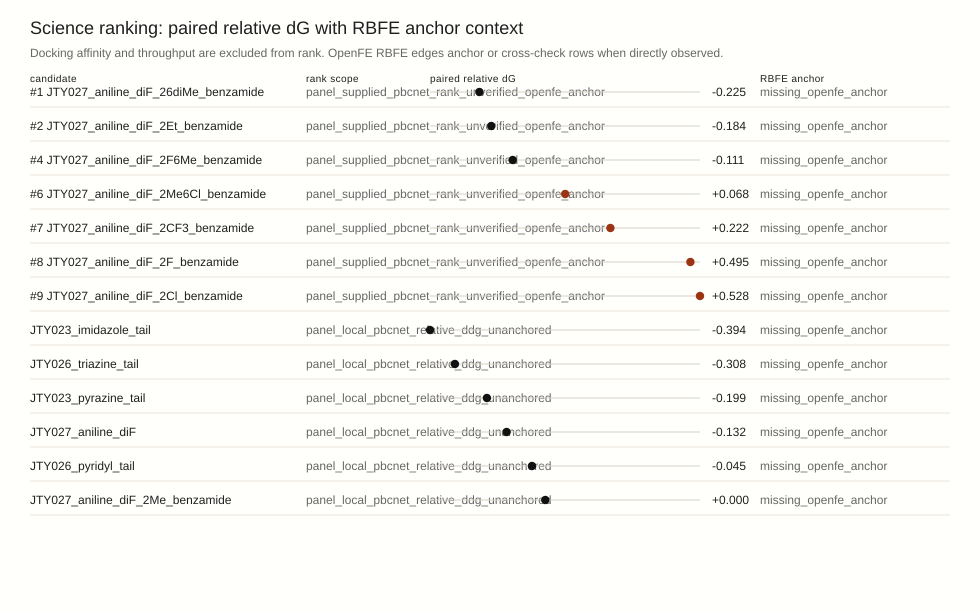
Strong pair-local PBCNet edges are not treated as irrelevant. They must be sewn into the global SAR loop through a shared closed graph or direct RBFE bridge before the cockpit suppresses them below the current top candidate.
No observed rows.
Root cause: Earlier clash-looking rows were caused by treating panel-prep ligand SDF conformers as if they were observed docked poses when no pose artifact was present for that candidate.
Fix in this packet: Protein-distance and clash screens now run only against observed docked pose artifacts; prep-only molecules are marked not_evaluated_no_docked_pose and their 3D receptor geometry is withheld.
Torsion relaxation recommendation: Constrained neural-potential torsion relaxation before any geometry-facing SAR claim. Use a neural-network potential trained to approximate quantum-mechanical energies/forces. It should cover the halogenated JTY chemistry class and run as a fast torsion relaxation screen before escalating ambiguous cases to semiempirical or higher-theory quantum scans.
When a polished pose fails the RMSD guard, SARviz now treats it as a separate pose hypothesis: redock it, compare original versus alternate with the paired model, and explain the local contact-mode delta before changing rank or pocket language. Status missing; /usr/local/jldos/docs/analysis/2026-04-30-pose-mode-delta-protocol.md; no pose-delta JSON observed.
Pose-mode rule: When a polished pose exceeds the RMSD guard, redock it and run a PBCNet pose-state compare plus pose-delta mechanism readout before changing SAR rank. Lost residues: none. Gained residues: none.
This is a first-class visible probe seed, not an earned formal analysis lane. Guarded torsion perturbation, redock on guard failure, paired-model replay, and mechanism classification are retained here to force falsification before SAR rank continuity changes. Status missing; maturity hypothesis_seed; formal lane earned False; no stress report link published.
Graph readout: No graph-level stress signal observed yet. Blocker: no observed pose-delta reports Next: run guarded torsion stress on admitted graph nodes before claiming a graph-level readout
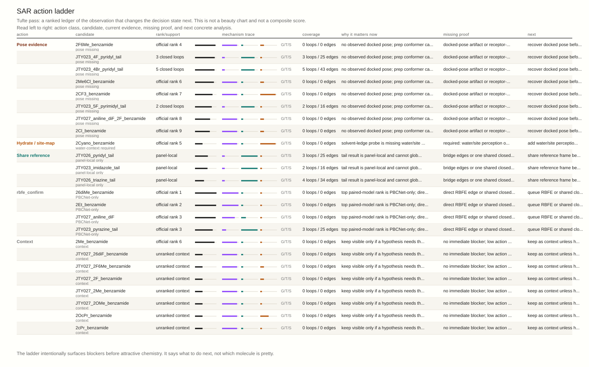
Status synthesized_from_jty027_sidecar_config; packet state admet_property_packet_present; gate counts {'hold': 8, 'review': 2}. Panel queue proof /workspace/jldos_outputs/shared_runs/jty027_sar_autonomy/panel_queue.json; current-control proof /workspace/jldos_outputs/shared_runs/jty027_sar_autonomy/current_control_decision.json.
ADMET probe ownership: Status missing_from_current_control_decision; axis solubility; lead missing; probes missing. Regenerate current_control_decision with embedded ADMET sidecars and a probe plan.
| Candidate | property role | gate | risk | solubility | permeability | tox | packet | proof |
|---|---|---|---|---|---|---|---|---|
| JTY027_aniline_diF_2F6Me_benzamide | jty027_property_followup | hold | 0.43350000000000005 | hold | admit | review | sdf.jty027_sar_admet_property_packet.v1 | /workspace/jldos_outputs/shared_runs/jty027_sar_autonomy/current_control_decision.json |
| JTY027_aniline_diF_2F_benzamide | permeability_preserving_matched_pair | hold | 0.43350000000000005 | hold | admit | review | sdf.jty027_sar_admet_property_packet.v1 | /workspace/jldos_outputs/shared_runs/jty027_sar_autonomy/current_control_decision.json |
| JTY027_aniline_diF_2Me_benzamide | incumbent_control | hold | 0.43350000000000005 | hold | admit | review | sdf.jty027_sar_admet_property_packet.v1 | /workspace/jldos_outputs/shared_runs/jty027_sar_autonomy/current_control_decision.json |
| JTY027_aniline_diF_26diMe_benzamide | binding_challenger_liability_debt | hold | 0.5505 | hold | review | review | sdf.jty027_sar_admet_property_packet.v1 | /workspace/jldos_outputs/shared_runs/jty027_sar_autonomy/current_control_decision.json |
| JTY027_aniline_diF_2CF3_benzamide | tox_lipophilicity_contrast | hold | 0.5505 | hold | review | review | sdf.jty027_sar_admet_property_packet.v1 | /workspace/jldos_outputs/shared_runs/jty027_sar_autonomy/current_control_decision.json |
| JTY027_aniline_diF_2Cl_benzamide | tox_lipophilicity_contrast | hold | 0.5505 | hold | review | review | sdf.jty027_sar_admet_property_packet.v1 | /workspace/jldos_outputs/shared_runs/jty027_sar_autonomy/current_control_decision.json |
| JTY027_aniline_diF_2Et_benzamide | tox_lipophilicity_contrast | hold | 0.5505 | hold | review | review | sdf.jty027_sar_admet_property_packet.v1 | /workspace/jldos_outputs/shared_runs/jty027_sar_autonomy/current_control_decision.json |
| JTY027_aniline_diF_2Me6Cl_benzamide | jty027_property_followup | hold | 0.5505 | hold | review | review | sdf.jty027_sar_admet_property_packet.v1 | /workspace/jldos_outputs/shared_runs/jty027_sar_autonomy/current_control_decision.json |
| JTY027_aniline_diF | jty027_property_followup | review | 0.3655 | review | admit | review | sdf.jty027_sar_admet_property_packet.v1 | /workspace/jldos_outputs/shared_runs/jty027_sar_autonomy/current_control_decision.json |
| JTY027_aniline_diF_2Cyano_benzamide | polarity_permeability_sentinel | review | 0.3655 | review | admit | review | sdf.jty027_sar_admet_property_packet.v1 | /workspace/jldos_outputs/shared_runs/jty027_sar_autonomy/current_control_decision.json |
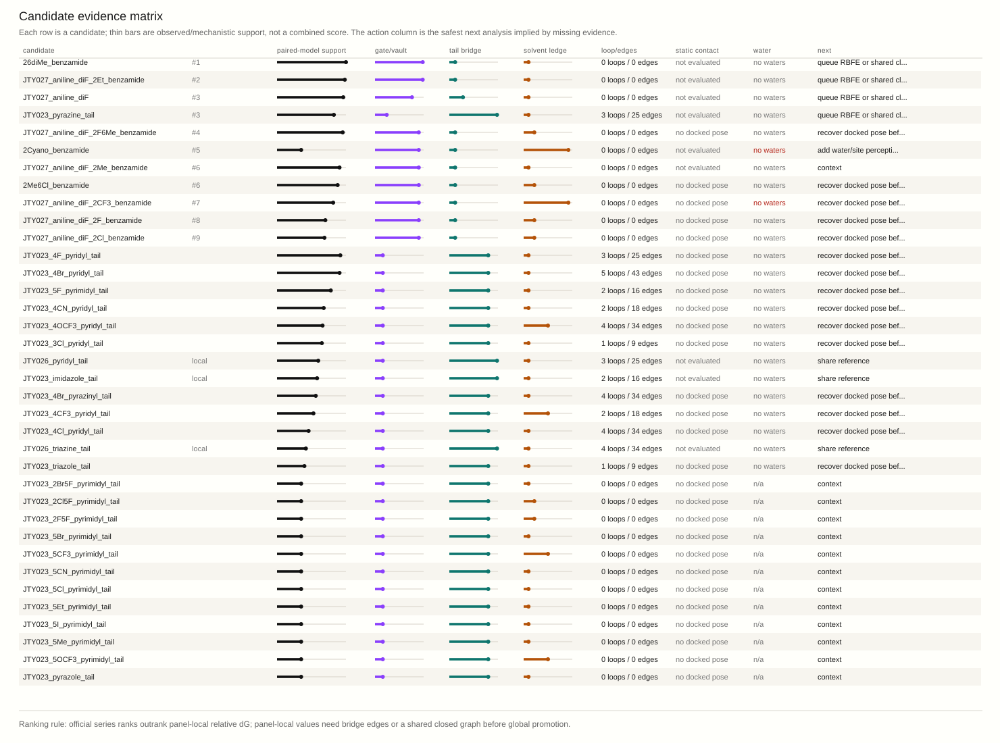
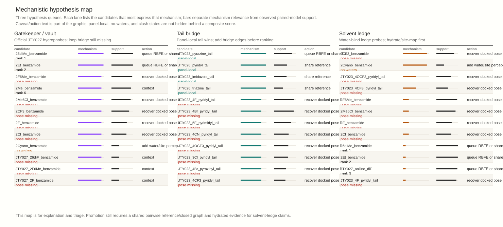
| Candidate | Paired model | Gate | Tail | Solvent | Coverage | Geometry | Water | Next analysis |
|---|---|---|---|---|---|---|---|---|
| 26diMe_benzamide paired free-energy model-only | rank 1; support 1.00 | 0.98 | 0.12 | 0.10 | 0 loops 0 edges | not evaluated | no explicit receptor waters | queue RBFE or shared closed-loop confirmation before handoff |
| JTY027_aniline_diF_2Et_benzamide paired free-energy model-only | rank 2; support 0.98 | 0.98 | 0.12 | 0.10 | 0 loops 0 edges | not evaluated | no explicit receptor waters | queue RBFE or shared closed-loop confirmation before handoff |
| JTY027_aniline_diF paired free-energy model-only | rank 3; support 0.96 | 0.76 | 0.28 | 0.10 | 0 loops 0 edges | not evaluated | no explicit receptor waters | queue RBFE or shared closed-loop confirmation before handoff |
| JTY023_pyrazine_tail paired free-energy model-only | rank 3; support 0.82 | 0.24 | 0.98 | 0.10 | 3 loops 25 edges | not evaluated | no explicit receptor waters | queue RBFE or shared closed-loop confirmation before handoff |
| JTY027_aniline_diF_2F6Me_benzamide pose missing | rank 4; support 0.95 | 0.90 | 0.12 | 0.22 | 0 loops 0 edges | no docked pose | no explicit receptor waters; blocked from halogen vector rationale until geometry audit | recover docked pose before geometry claims |
| 2Cyano_benzamide water-context required | rank 5; support 0.35 | 0.90 | 0.12 | 0.92 | 0 loops 0 edges | not evaluated | no explicit receptor waters; context required; blocked until water site or contact overlay | add water/site perception or contact-map overlay before wet-review claim |
| JTY027_aniline_diF_2Me_benzamide context | rank 6; support 0.91 | 0.90 | 0.12 | 0.10 | 0 loops 0 edges | not evaluated | no explicit receptor waters | keep as context unless hypothesis needs it |
| 2Me6Cl_benzamide pose missing | rank 6; support 0.88 | 0.90 | 0.12 | 0.22 | 0 loops 0 edges | no docked pose | no explicit receptor waters; blocked from halogen vector rationale until geometry audit | recover docked pose before geometry claims |
| JTY027_aniline_diF_2CF3_benzamide pose missing | rank 7; support 0.81 | 0.90 | 0.12 | 0.92 | 0 loops 0 edges | no docked pose | no explicit receptor waters; context required; blocked until water site or contact overlay | recover docked pose before geometry claims |
| JTY027_aniline_diF_2F_benzamide pose missing | rank 8; support 0.70 | 0.90 | 0.12 | 0.22 | 0 loops 0 edges | no docked pose | no explicit receptor waters; blocked from halogen vector rationale until geometry audit | recover docked pose before geometry claims |
| JTY027_aniline_diF_2Cl_benzamide pose missing | rank 9; support 0.69 | 0.90 | 0.12 | 0.22 | 0 loops 0 edges | no docked pose | no explicit receptor waters; blocked from halogen vector rationale until geometry audit | recover docked pose before geometry claims |
| JTY023_4F_pyridyl_tail pose missing | support 0.92 | 0.16 | 0.80 | 0.10 | 3 loops 25 edges | no docked pose | no explicit receptor waters | recover docked pose before geometry claims |
| JTY023_4Br_pyridyl_tail pose missing | support 0.91 | 0.16 | 0.80 | 0.10 | 5 loops 43 edges | no docked pose | no explicit receptor waters | recover docked pose before geometry claims |
| JTY023_5F_pyrimidyl_tail pose missing | support 0.78 | 0.16 | 0.80 | 0.10 | 2 loops 16 edges | no docked pose | no explicit receptor waters | recover docked pose before geometry claims |
| JTY023_4CN_pyridyl_tail pose missing | support 0.68 | 0.16 | 0.80 | 0.10 | 2 loops 18 edges | no docked pose | no explicit receptor waters | recover docked pose before geometry claims |
| JTY023_4OCF3_pyridyl_tail pose missing | support 0.66 | 0.16 | 0.80 | 0.50 | 4 loops 34 edges | no docked pose | no explicit receptor waters | recover docked pose before geometry claims |
| JTY023_3Cl_pyridyl_tail pose missing | support 0.65 | 0.16 | 0.80 | 0.10 | 1 loops 9 edges | no docked pose | no explicit receptor waters | recover docked pose before geometry claims |
| JTY026_pyridyl_tail panel-local only | support 0.60 | 0.16 | 0.98 | 0.10 | 3 loops 25 edges | not evaluated | no explicit receptor waters | share reference frame before ranking |
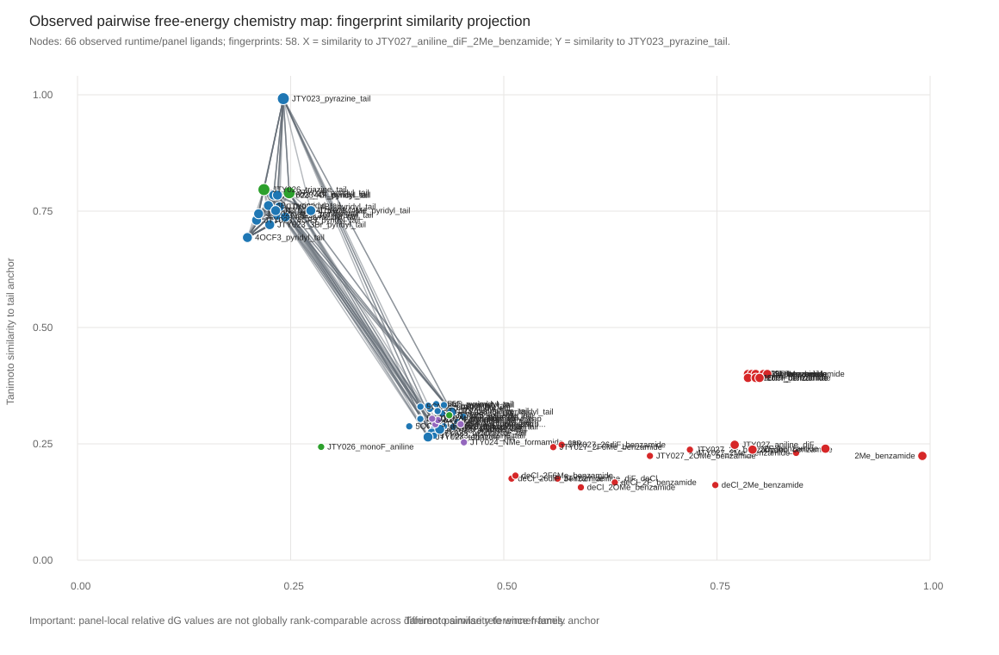
| Loop | Ligands | Edges | Anchor | Closed | Connected | Path |
|---|---|---|---|---|---|---|
| jty_4br_pyridyl_cycle2_closed_graph_20260421T221809Z | 10 | 45 | JTY023_4Br_pyridyl_tail | True | True | /usr/local/jldos/evidence/paired_model/jty_4br_pyridyl_cycle2_closed_graph_20260421T221809Z/paired_model_closed_graph.json |
| jty_4cl_pyridyl_cycle1_closed_graph_cpu_from_gpu_dock_20260421T221258Z | 10 | 45 | JTY023_4Cl_pyridyl_tail | True | True | /usr/local/jldos/evidence/paired_model/jty_4cl_pyridyl_cycle1_closed_graph_cpu_from_gpu_dock_20260421T221258Z/paired_model_closed_graph.json |
| jty_top10_posebacked_closed_graph_full_20260421T212119Z | 10 | 45 | JTY023_pyrazine_tail | True | True | /usr/local/jldos/evidence/paired_model/jty_top10_posebacked_closed_graph_full_20260421T212119Z/paired_model_closed_graph.json |
| jty_top10_posebacked_closed_graph_20260421T204322Z | 8 | 28 | JTY023_pyrazine_tail | True | True | /usr/local/jldos/evidence/paired_model/jty_top10_posebacked_closed_graph_20260421T204322Z/paired_model_closed_graph.json |
| seed_1 | 6 | 15 | JTY023_4Br_pyridyl_tail | True | True | /usr/local/jldos/evidence/paired_model/jty_4br_direct_descendants_seed_conditioned_20260422T002942Z/seed_1/paired_model_closed_graph.json |
| seed_1 | 6 | 15 | JTY023_4Br_pyridyl_tail | True | True | /usr/local/jldos/evidence/paired_model/jty_4br_direct_descendants_seed_conditioned_20260422T003052Z/seed_1/paired_model_closed_graph.json |
| seed_1 | 6 | 15 | JTY023_4Br_pyridyl_tail | True | True | /usr/local/jldos/evidence/paired_model/jty_4br_direct_descendants_seed_conditioned_20260422T003158Z/seed_1/paired_model_closed_graph.json |
| seed_2 | 6 | 15 | JTY023_4Br_pyridyl_tail | True | True | /usr/local/jldos/evidence/paired_model/jty_4br_direct_descendants_seed_conditioned_20260422T003158Z/seed_2/paired_model_closed_graph.json |
| seed_3 | 6 | 15 | JTY023_4Br_pyridyl_tail | True | True | /usr/local/jldos/evidence/paired_model/jty_4br_direct_descendants_seed_conditioned_20260422T003158Z/seed_3/paired_model_closed_graph.json |
| Panel | Candidate | Rank shown | rel dG | Scope | Pose | ADMET gate | property role |
|---|---|---|---|---|---|---|---|
| jty_paired_model_tail_cleanup_r1 | JTY023_imidazole_tail | panel score 1 | -0.394 | panel_local_relative_ddg_rank | stable | ||
| jty_paired_model_tail_cleanup_r1 | JTY026_triazine_tail | panel score 2 | -0.308 | panel_local_relative_ddg_rank | stable | ||
| jty_paired_model_tail_cleanup_r1 | JTY023_pyrazine_tail | panel score 3 | -0.199 | panel_local_relative_ddg_rank | stable | ||
| jty_paired_model_tail_cleanup_r1 | JTY027_aniline_diF | panel score 4 | -0.132 | panel_local_relative_ddg_rank | moderate | review | jty027_property_followup |
| jty_paired_model_tail_cleanup_r1 | JTY026_pyridyl_tail | panel score 5 | -0.045 | panel_local_relative_ddg_rank | stable | ||
| jty_paired_model_tail_cleanup_r1 | JTY027_aniline_diF_2Me_benzamide | panel score 6 | +0.000 | panel_local_relative_ddg_rank | stable | hold | incumbent_control |
| jty_paired_model_winner_family_exploitation_r1 | JTY027_aniline_diF_26diMe_benzamide | series rank 1 | -0.225 | official_series_paired_model_rank | not_checked | hold | binding_challenger_liability_debt |
| jty_paired_model_winner_family_exploitation_r1 | JTY027_aniline_diF_2Et_benzamide | series rank 2 | -0.184 | official_series_paired_model_rank | not_checked | hold | tox_lipophilicity_contrast |
| jty_paired_model_winner_family_exploitation_r1 | JTY027_aniline_diF | series rank 3 | -0.132 | official_series_paired_model_rank | not_checked | review | jty027_property_followup |
| jty_paired_model_winner_family_exploitation_r1 | JTY027_aniline_diF_2F6Me_benzamide | series rank 4 | -0.111 | official_series_paired_model_rank | not_checked | hold | jty027_property_followup |
| jty_paired_model_winner_family_exploitation_r1 | JTY027_aniline_diF_2Me_benzamide | series rank 5 | +0.000 | official_series_paired_model_rank | not_checked | hold | incumbent_control |
| jty_paired_model_winner_family_exploitation_r1 | JTY027_aniline_diF_2Me6Cl_benzamide | series rank 6 | +0.068 | official_series_paired_model_rank | not_checked | hold | jty027_property_followup |
| jty_paired_model_winner_family_exploitation_r1 | JTY027_aniline_diF_2CF3_benzamide | series rank 7 | +0.222 | official_series_paired_model_rank | not_checked | hold | tox_lipophilicity_contrast |
| jty_paired_model_winner_family_exploitation_r1 | JTY027_aniline_diF_2F_benzamide | series rank 8 | +0.495 | official_series_paired_model_rank | not_checked | hold | permeability_preserving_matched_pair |
| jty_paired_model_winner_family_exploitation_r1 | JTY027_aniline_diF_2Cl_benzamide | series rank 9 | +0.528 | official_series_paired_model_rank | not_checked | hold | tox_lipophilicity_contrast |
| jty_paired_model_winner_family_exploitation_r1 | JTY027_aniline_diF_2Cyano_benzamide | not ranked | missing_paired_model_score | not_checked | review | polarity_permeability_sentinel | |
| jty_paired_model_winner_family_exploitation_r1 | JTY027_aniline_diF_2OcPr_benzamide | not ranked | missing_paired_model_score | not_checked | |||
| jty_paired_model_winner_family_exploitation_r1 | JTY027_aniline_diF_2cPr_benzamide | not ranked | missing_paired_model_score | not_checked |
This section reports residue contacts and hard-clash screening only when an observed docked pose artifact exists. Prep SDF conformers are no longer treated as receptor poses. Water claims are withheld when the receptor artifact has no explicit waters.
| Candidate | geometry evidence | closest residues <=4A | min A | clashes <2.2A | readout | root-cause note |
|---|---|---|---|---|---|---|
| JTY027_aniline_diF_2Me_benzamide | not_evaluated_no_receptor_atoms | 0 | not evaluated: receptor geometry atoms were unavailable | The receptor artifact did not yield readable protein heavy atoms. | ||
| JTY023_pyrazine_tail | not_evaluated_no_receptor_atoms | 0 | not evaluated: receptor geometry atoms were unavailable | The receptor artifact did not yield readable protein heavy atoms. | ||
| JTY027_aniline_diF_2Cyano_benzamide | not_evaluated_no_receptor_atoms | 0 | not evaluated: receptor geometry atoms were unavailable | The receptor artifact did not yield readable protein heavy atoms. | ||
| JTY027_aniline_diF_2Et_benzamide | not_evaluated_no_receptor_atoms | 0 | not evaluated: receptor geometry atoms were unavailable | The receptor artifact did not yield readable protein heavy atoms. | ||
| JTY027_aniline_diF | not_evaluated_no_receptor_atoms | 0 | not evaluated: receptor geometry atoms were unavailable | The receptor artifact did not yield readable protein heavy atoms. | ||
| JTY027_aniline_diF_26diMe_benzamide | not_evaluated_no_receptor_atoms | 0 | not evaluated: receptor geometry atoms were unavailable | The receptor artifact did not yield readable protein heavy atoms. | ||
| JTY027_aniline_diF_2F6Me_benzamide | not_evaluated_no_docked_pose | 0 | not evaluated: no docked pose artifact was observed; prep conformer is not a receptor pose | No docked-pose artifact was found for this row; prior clash-looking values came from using the ligand prep SDF as if it were a docked pose. | ||
| JTY023_4F_pyridyl_tail | not_evaluated_no_docked_pose | 0 | not evaluated: no docked pose artifact was observed; prep conformer is not a receptor pose | No docked-pose artifact was found for this row; prior clash-looking values came from using the ligand prep SDF as if it were a docked pose. | ||
| JTY023_4Br_pyridyl_tail | not_evaluated_no_docked_pose | 0 | not evaluated: no docked pose artifact was observed; prep conformer is not a receptor pose | No docked-pose artifact was found for this row; prior clash-looking values came from using the ligand prep SDF as if it were a docked pose. | ||
| JTY027_aniline_diF_2Me6Cl_benzamide | not_evaluated_no_docked_pose | 0 | not evaluated: no docked pose artifact was observed; prep conformer is not a receptor pose | No docked-pose artifact was found for this row; prior clash-looking values came from using the ligand prep SDF as if it were a docked pose. | ||
| JTY027_aniline_diF_2CF3_benzamide | not_evaluated_no_docked_pose | 0 | not evaluated: no docked pose artifact was observed; prep conformer is not a receptor pose | No docked-pose artifact was found for this row; prior clash-looking values came from using the ligand prep SDF as if it were a docked pose. | ||
| JTY023_5F_pyrimidyl_tail | not_evaluated_no_docked_pose | 0 | not evaluated: no docked pose artifact was observed; prep conformer is not a receptor pose | No docked-pose artifact was found for this row; prior clash-looking values came from using the ligand prep SDF as if it were a docked pose. | ||
| JTY027_aniline_diF_2F_benzamide | not_evaluated_no_docked_pose | 0 | not evaluated: no docked pose artifact was observed; prep conformer is not a receptor pose | No docked-pose artifact was found for this row; prior clash-looking values came from using the ligand prep SDF as if it were a docked pose. | ||
| JTY027_aniline_diF_2Cl_benzamide | not_evaluated_no_docked_pose | 0 | not evaluated: no docked pose artifact was observed; prep conformer is not a receptor pose | No docked-pose artifact was found for this row; prior clash-looking values came from using the ligand prep SDF as if it were a docked pose. | ||
| JTY023_4CN_pyridyl_tail | not_evaluated_no_docked_pose | 0 | not evaluated: no docked pose artifact was observed; prep conformer is not a receptor pose | No docked-pose artifact was found for this row; prior clash-looking values came from using the ligand prep SDF as if it were a docked pose. | ||
| JTY023_4OCF3_pyridyl_tail | not_evaluated_no_docked_pose | 0 | not evaluated: no docked pose artifact was observed; prep conformer is not a receptor pose | No docked-pose artifact was found for this row; prior clash-looking values came from using the ligand prep SDF as if it were a docked pose. |
| Solvent-ledge probe | water evidence | water atoms | readout | context required | claim guardrail | analysis to queue |
|---|---|---|---|---|---|---|
| JTY027_aniline_diF_2Cyano_benzamide | no_explicit_receptor_waters | 0 | no explicit waters in receptor; static nearest-water evidence is unavailable | requires water/site perception or contact-map overlay before wet-review claim | wet-review claim blocked until water/site or contact-map context is present | queue hydrated receptor/site-map analysis before using solvent-ledge SAR claims |
| JTY027_aniline_diF_2CF3_benzamide | no_explicit_receptor_waters | 0 | no explicit waters in receptor; static nearest-water evidence is unavailable | requires water/site perception or contact-map overlay before wet-review claim | wet-review claim blocked until water/site or contact-map context is present | queue hydrated receptor/site-map analysis before using solvent-ledge SAR claims |
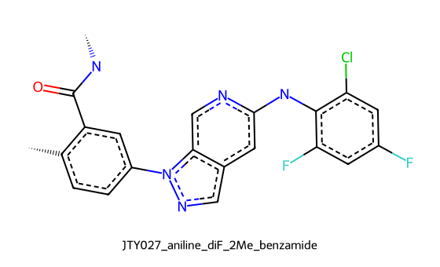
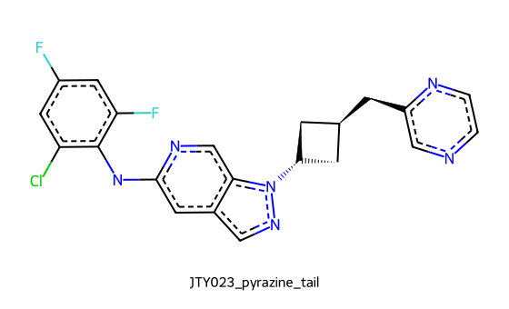
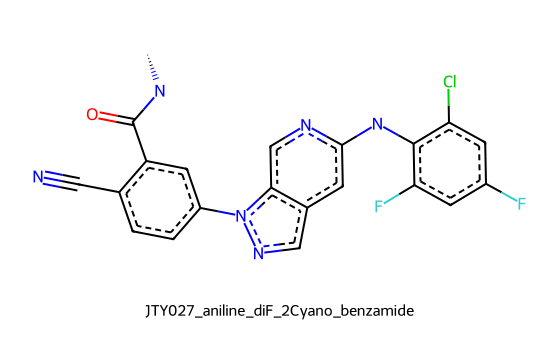
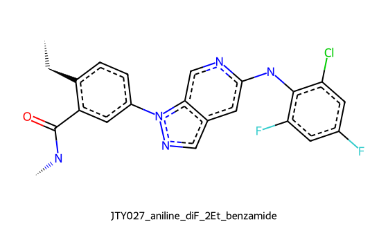
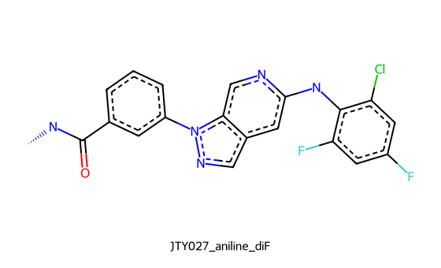
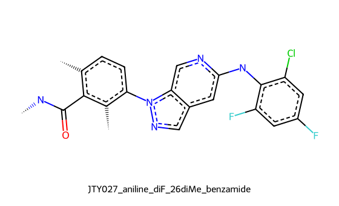
| # | Hypothesis | Status | What is observed | Why this is chosen | Missing evidence | Guardrail | Context required | SAR/analysis queue direction |
|---|---|---|---|---|---|---|---|---|
| 1 | gatekeeper_vault_hydrophobe_fit | active | Calibrated pairwise free-energy ranks favor compact ortho hydrophobe variants inside the winner-family benzamide series. | Top paired-model/panel candidates: JTY027_aniline_diF_26diMe_benzamide, JTY027_aniline_diF_2Et_benzamide, JTY027_aniline_diF, JTY027_aniline_diF_2F6Me_benzamide. This matches the pocket feature map's gatekeeper-vault packing story. | A single integrated closed loop spanning winner-family hydrophobes and tail-cleanup candidates is still missing. | Queue an integrated pairwise closed graph containing 2Me, 2Et, 26diMe, 2cPr, 2Me6Cl, and the best tail-cleanup nodes. | ||
| 2 | tail_cleanup_bridge | active_bridge | Tail-cleanup candidates show favorable panel-local relative dG, but their reference frame is separate from the winner-family ranking frame. | This directly explains why the -0.393 tail-cleanup result should be visible but not promoted as global rank 1. | Tail-cleanup and benzamide winner-family nodes need a shared closed graph or bridge edges. | Queue bridge edges from JTY023/JTY026 tail nodes into the JTY027 winner-family loop before promotion decisions. | ||
| 3 | solvent_ledge_probe | needs_hydration_evidence | Solvent-ledge probes are present: none observed. | 2OcPr, 2Cyano, and 2CF3 are chemically meaningful probes for whether the ledge tolerates polarity, alkoxy bulk, or water displacement. | 2OcPr, 2Cyano, and 2CF3 require water/site perception or receptor contact-map overlays before any wet-review claim. | solvent_ledge_water_shell_probes | water/site perception or contact-map overlay before wet-review claim | Queue water/site perception or contact-map overlays first; only then score solvent-ledge probes as synthesis-facing SAR. |
| 4 | lys_anchor_water_check | negative_guardrail | No durable Lys93 bridge is claimed for the JTY series in this packet. | The corrected readout treats Lys93-adjacent water / lys_anchor_water as weak or transient rather than a synthesis rationale. | Hydrated receptor/site-map or contact-frequency evidence is only needed if this check would change a ranked SAR decision. | lys_anchor_water | durable bridge language requires dynamic or hydrated-site evidence | Do not rerun by default; queue only when a surviving candidate needs a water-bridge decision. |
| 5 | halogen_vector_geometry_guardrail | negative_guardrail | Halogen/electronics vectors are present as SAR descriptors, not as audited sigma-hole claims. | Unaudited halogen-vector language should not justify synthesis or wet-review promotion. | Explicit distance/angle/contact geometry audit for the halogen vector. | halogen_vector_claims | explicit halogen geometry audit before synthesis rationale | Keep halogen-bearing candidates visible, but block sigma-hole rationale until geometry is audited. |
| 6 | hinge_anchor_and_local_contact_continuity | monitor | Static pose contact rows are present for the latest docked candidates. | The pocket story requires retained binding geometry while substituents explore the gatekeeper vault and solvent ledge. | Static contact counts do not establish persistent interactions; no MD/contact-frequency evidence is included here. | lys_anchor_water stays weak/transient unless directly revalidated | contact frequency evidence before persistent bridge language | Queue contact-frequency or short restrained dynamics only for candidates that survive integrated pairwise ranking. |
| 7 | closed_loop_consistency | active_qc | 9 observed pairwise closed-loop artifacts are available; primary loop has 10 ligands and 45 edges. | Loop closure is the right way to see whether local pair claims cohere across the SAR map. | The currently integrated loops do not yet include every admitted probe in one common loop. | ranking remains paired-model/RBFE anchored | shared closed graph before global promotion | Queue one consolidated closed loop after selecting the next admitted probe set from the hypotheses above. |
Narrative source: None. WuXi alignment: None.